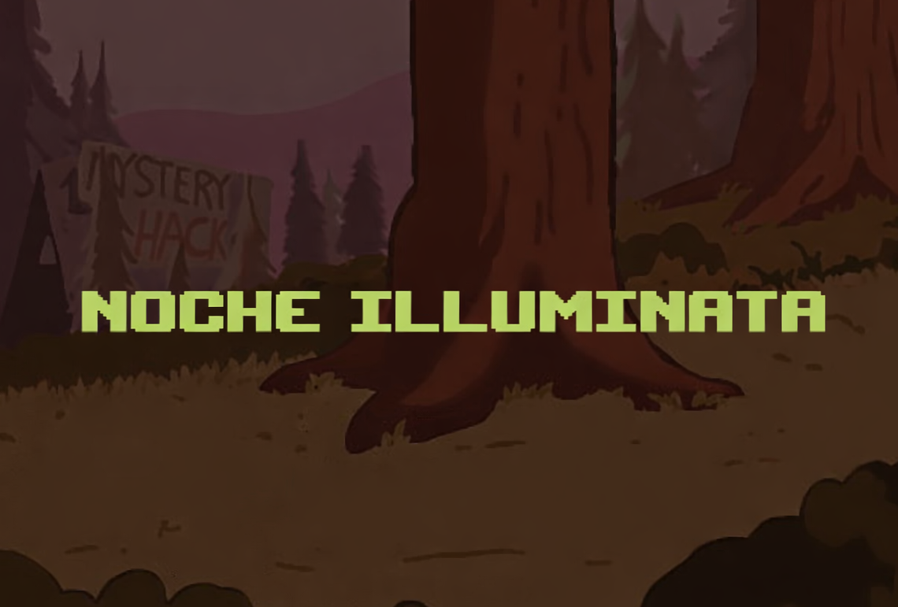

Historia
En una noche tranquila y oscura, cuando el silencio lo cubre todo y Gravity Falls parece dormir, una extraña luz parpadeante te despierta de repente. No se parece a nada que hayas visto antes.
No aparece en el diario, no hay registros, ni advertencias, ni pistas sobre su origen.
Es como si el propio bosque intentara llamar tu atención… o advertirte.
A partir de ese momento, comienza una noche llena de decisiones. Cada paso que das, cada elección que tomas, puede acercarte a la seguridad… o empujarte directo hacia un peligro desconocido.
Nada es lo que parece, y en las sombras se esconden secretos que llevan años esperando ser descubiertos.
La luz cada vez brilla mas, estas mas y mas cerca, llegando hacia lo desconocido. ¿Es una señal de ayuda o una trampa cuidadosamente preparada? El tiempo corre, y la curiosidad puede ser tan peligrosa como el miedo.
¿Te atreves a adentrarte en esta aventura?
¿Te atreves a adentrarte en esta aventura?
¿A dónde te llevará esa misteriosa luz?
¿Qué nuevos secretos y horrores se esconden en Gravity Falls?
La noche apenas comienza…